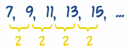
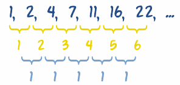

Sequences - Finding a Rule
To find a missing number in a Sequence, first we must have a Rule
Sequence
A Sequence is a set of things (usually numbers) that are in order.

Each number in the sequence is called a term (or sometimes "element" or "member"), read Sequences and Series for a more in-depth discussion.
Finding Missing Numbers
To find a missing number, first find a Rule behind the Sequence.
Sometimes we can just look at the numbers and see a pattern:
Example: 1, 4, 9, 16, ?
Answer: they are Squares (12=1, 22=4, 32=9, 42=16, ...)
Rule: xn = n2
Sequence: 1, 4, 9, 16, 25, 36, 49, ...
Did you see how we wrote that rule using "x" and "n" ?
xn means "term number n", so term 3 is written x3
And we can calculate term 3 using:
x3 = 32 = 9
We can use a Rule to find any term. For example, the 25th term can be found by "plugging in" 25 wherever n is.
x25 = 252 = 625
How about another example:
Example: 3, 5, 8, 13, 21, ?
After 3 and 5 all the rest are the sum of the two numbers before,
That is 3 + 5 = 8, 5 + 8 = 13 etc, which is part of the Fibonacci Sequence:
3, 5, 8, 13, 21, 34, 55, 89, ...
Which has this Rule:
Rule: xn = xn-1 + xn-2
Now what does xn-1 mean? It means "the previous term" as term number n-1 is 1 less than term number n.
And xn-2 means the term before that one.
Let's try that Rule for the 6th term:
x6 = x6-1 + x6-2
x6 = x5 + x4
So term 6 equals term 5 plus term 4. We already know term 5 is 21 and term 4 is 13, so:
x6 = 21 + 13 = 34
Many Rules
One of the troubles with finding "the next number" in a sequence is that mathematics is so powerful we can find more than one Rule that works.
What is the next number in the sequence 1, 2, 4, 7, ?
Here are three solutions (there can be more!):
Solution 1: Add 1, then add 2, 3, 4, ...
So, 1+1=2, 2+2=4, 4+3=7, 7+4=11, etc...
Rule: xn = n(n-1)/2 + 1
Sequence: 1, 2, 4, 7, 11, 16, 22, ...
(That rule looks a bit complicated, but it works)
Solution 2: After 1 and 2, add the two previous numbers, plus 1:
Rule: xn = xn-1 + xn-2 + 1
Sequence: 1, 2, 4, 7, 12, 20, 33, ...
Solution 3: After 1, 2 and 4, add the three previous numbers
Rule: xn = xn-1 + xn-2 + xn-3
Sequence: 1, 2, 4, 7, 13, 24, 44, ...
So, we have three perfectly reasonable solutions, and they create totally different sequences.
Which is right? They are all right.
And there are other solutions ...|
... it may be a list of the winners' numbers ... so the next number could be ... anything! |
Simplest Rule
When in doubt choose the simplest rule that makes sense, but also mention that there are other solutions.
Finding Differences
Sometimes it helps to find the differences between each pair of numbers ... this can often reveal an underlying pattern.
Here is a simple case:

The differences are always 2, so we can guess that "2n" is part of the answer.
Let us try 2n:
| n: | 1 | 2 | 3 | 4 | 5 |
|---|---|---|---|---|---|
| Terms (xn): | 7 | 9 | 11 | 13 | 15 |
| 2n: | 2 | 4 | 6 | 8 | 10 |
| Wrong by: | 5 | 5 | 5 | 5 | 5 |
The last row shows that we are always wrong by 5, so just add 5 and we are done:
Rule: xn = 2n + 5
OK, we could have worked out "2n+5" by just playing around with the numbers a bit, but we want a systematic way to do it, for when the sequences get more complicated.
Second Differences
In the sequence {1, 2, 4, 7, 11, 16, 22, ...} we need to find the differences ...
... and then find the differences of those (called second differences), like this:

The second differences in this case are 1.
With second differences we multiply by n22
In our case the difference is 1, so let us try just n22:
| n: | 1 | 2 | 3 | 4 | 5 |
|---|---|---|---|---|---|
| Terms (xn): | 1 | 2 | 4 | 7 | 11 |
| n22: | 0.5 | 2 | 4.5 | 8 | 12.5 |
| Wrong by: | 0.5 | 0 | -0.5 | -1 | -1.5 |
We are close, but seem to be drifting by 0.5, so let us try: n22 − n2
| n22 − n2 | 0 | 1 | 3 | 6 | 10 |
|---|---|---|---|---|---|
| Wrong by: | 1 | 1 | 1 | 1 | 1 |
Wrong by 1 now, so let us add 1:
| n22 − n2 + 1 | 1 | 2 | 4 | 7 | 11 |
|---|---|---|---|---|---|
| Wrong by: | 0 | 0 | 0 | 0 | 0 |
We did it!
The formula n22 − n2 + 1 can be simplified to n(n-1)/2 + 1
So by "trial-and-error" we discovered a rule that works:
Rule: xn = n(n-1)/2 + 1
Sequence: 1, 2, 4, 7, 11, 16, 22, 29, 37, ...
Other Types of Sequences
Read Sequences and Series to learn about:
And there are also:
And many more!
In truth there are too many types of sequences to mention here, but if there is a special one you would like me to add just let me know.